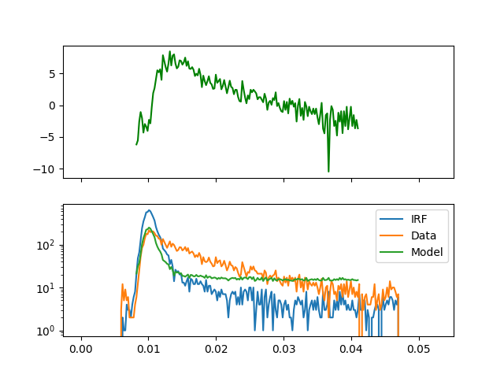

Note
Click here to download the full example code
Fluorescence decay analysis - 2¶
import pylab as p
import scipy.optimize
import numpy as np
import tttrlib
import fit2x
def objective_function_chi2(
x: np.ndarray,
decay_object: fit2x.Decay,
x_min:int = 20,
x_max:int = 150
):
time_shift, scatter, lifetime_spectrum = x[0], x[1], x[2:]
scatter = abs(scatter)
lifetime_spectrum = np.abs(lifetime_spectrum)
decay_object.lifetime_spectrum = lifetime_spectrum
decay_object.scatter_fraction = scatter
decay_object.irf_shift_channels = time_shift
wres = decay_object.weighted_residuals
return np.sum(wres[x_min:x_max]**2)
# load file
spc132_filename = '../../test/data/bh_spc132_sm_dna/m000.spc'
data = tttrlib.TTTR(spc132_filename, 'SPC-130')
ch0_indeces = data.get_selection_by_channel([0, 8])
data_ch0 = data[ch0_indeces]
# selection low count rate region
tttr_low_count_rate = data_ch0[
data_ch0.get_selection_by_count_rate(
time_window=6.0,
n_ph_max=7,
invert=False
)
]
# Select high count region
tttr_high_count_rate = data_ch0[
data_ch0.get_selection_by_count_rate(
time_window=0.005,
n_ph_max=2,
invert=True
)
]
Make decay object #¶
decay_object = fit2x.Decay(
tttr_data=tttr_high_count_rate,
tttr_irf=tttr_low_count_rate,
tttr_micro_time_coarsening=16,
)
time_axis = decay_object.get_time_axis()
# Define fit range
# The BH card are not linear at the end of the TAC
# Thus, do not the full range
x_min, x_max = 40, 200
# inital parameters for fit
time_shift = 0
scatter = 0.001
mean_tau = tttrlib.TTTR.compute_mean_lifetime(
tttr_data=tttr_high_count_rate,
tttr_irf=tttr_low_count_rate
)
lifetime_spectrum = [0.5, 0.8, 0.5, 3.0]
Optimize #¶
x0 = np.hstack(
[
time_shift,
scatter,
lifetime_spectrum
]
)
fit = scipy.optimize.minimize(
objective_function_chi2, x0,
args=(decay_object, x_min, x_max),
)
Plot #¶
wres = decay_object.get_weighted_residuals()
fig, ax = p.subplots(nrows=2, ncols=1, sharex=True, sharey=False)
ax[1].semilogy(time_axis, decay_object.get_irf(), label="IRF")
ax[1].semilogy(time_axis, decay_object.get_data(), label="Data")
ax[1].semilogy(time_axis[x_min:x_max], decay_object.get_model()[x_min:x_max], label="Model")
ax[1].legend()
ax[0].plot(
time_axis[x_min:x_max], wres[x_min:x_max],
label='w.res.',
color='green'
)
p.show()

Total running time of the script: ( 0 minutes 0.295 seconds)